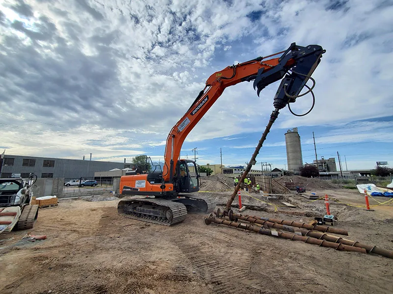

Foundation repair · American Fork · all of Utah
Foundation repair in American Fork, down to solid ground.
Rhino Foundation Systems does foundation repair in American Fork, Salt Lake City and across Utah: helical and push piers, basement waterproofing, crawl space encapsulation, drains, sump pumps and concrete lifting. Consultations and estimates are free.

01 / The signs
How to tell if you need foundation repair.
Even small cracks can become major issues if left unchecked. These are four of the signs Rhino tells homeowners to watch for.
- 01
Settlement cracks
Horizontal cracks in your foundation may not necessarily mean that you have a serious foundation problem, but it’s worth checking out. If it’s a horizontal rather than a vertical crack in the basement wall, get in touch as soon as possible.

- 02
Wall cracks
Cracks in both the drywall and foundation walls can be signs of structural issues. While drywall cracks may seem minor, they can indicate shifting that impacts your foundation.

- 03
Water in the basement or crawl space
Unaddressed moisture in these areas can create ideal conditions for foundation problems, as temperature fluctuations may cause cracks to form and worsen over time.
- 04
Bowing or leaning walls
Bowing walls may indicate pressure from the soil surrounding your home or shifting within the foundation itself. Check whether the walls are misaligned at the top or bottom.
02 / Drive the pier
Soil decides everything.
Each soil type reacts differently to water and weight. Drag the gauge to drive a helical pier down, layer by layer, until it reaches soil that holds.
Drag the depth gauge · drawing for illustration; real layers vary from lot to lot
Layer 01 of 05
Loam
Loam is the ideal soil for foundations due to its balanced composition of clay, sand, and silt. It offers excellent drainage, minimal expansion or contraction, and strong support.
Layer 02 of 05
Silt
Silt soil retains moisture better than sand and provides moderate support when compacted. Unfortunately, it is highly prone to water retention and frost heave, causing foundation settling and shifting.
Layer 03 of 05
Clay
Clay soil is dense and provides good load-bearing capacity when dry. However, it expands significantly when wet, leading to potential foundation movement, cracks, and structural instability.
Layer 04 of 05
Sand
Sand soil provides good drainage. However, its loose, granular nature makes it prone to shifting or displacement under heavy loads.
Layer 05 of 05
Below the frost line
Helical piers are installed like a corkscrew, deeply anchoring the foundation below the frost line. Once in place, they evenly distribute the weight of the structure, stabilizing the foundation and preventing future settlement or shifting.
The soil descriptions are Rhino’s own. Rhino evaluates soil conditions on site and tailors the repair to them.
Helical & push piers03 / Services
Under the house, around the house.
Residential and commercial: from the piers under a foundation to the drains around it and the concrete in front of it.



04 / Commercial
Built for loads bigger than a house.
Commercial foundation repair for buildings where downtime costs money: the same piers and soil work, planned around the business.
Commercial foundation repair05 / What they say
From homeowners along the Wasatch Front.
“Chase and Casey visited our house, and we explained the flooding situation with our basement. They were insightful, thorough, helpful, honest, and recommended some cost-effective ways we could fix our problems. They didn’t try to upsell us or push us to something that wasn’t necessary. Definitely earned our trust!”
“I wasn’t even sure that my old leaking basement could be fixed. But these guys not only fixed it but fixed it beautifully. They were professional, upfront, friendly, and responsive and treated me like a big client, even though I know my project was small for them. I’m so pleased.”
“We were very happy with Rhino Foundation Systems through this entire process. Everyone that we worked with was professional, honest, and took the time to answer all of our questions! We have already recommended RFS to our friend in need of basement waterproofing.”
06 / Service area
All of Utah, county by county.
Located in the heart of the Wasatch Front and serving the entire state. See the full service area.
Utah County
- American Fork
- Alpine
- Highland
- Lehi
- Saratoga Springs
- Cedar Hills
- Pleasant Grove
Salt Lake County
- Salt Lake City
- West Valley
- Draper
- Sandy
- Bluffdale
- Millcreek
Summit County
- Park City
- Snyderville
- Kamas
- Coalville
- Peoa
Davis County
- Layton
- Bountiful
- Kaysville
- Farmington
- Centerville
Wasatch County
- Heber City
- Midway
Washington County
- St. George
- Ivins
- Santa Clara
- Hurricane
- La Verkin
- Washington
07 / Questions
Good to know.
01Are consultations and estimates really free?
Yes. Rhino Foundation Systems offers free consultations and free estimates. Call 801-509-5344 or send the form.
02What’s the difference between helical piers and push piers?
Helical piers are steel shafts with corkscrew-like plates, screwed into the soil with hydraulic power and anchored below the frost line. Push piers are long steel piles driven deep into the soil with hydraulic pressure; as they go deeper they can lift and stabilize a sinking foundation. See helical and push piers.
03Does my soil matter?
Yes. Each soil type reacts differently to moisture and weight: clay expands when wet, silt holds water and heaves with frost, sand can shift under load, and loam is the most stable. Rhino evaluates soil conditions and tailors the repair to them.
04Where do you work?
Across Utah: Salt Lake, Utah, Davis, Summit, Wasatch and Washington counties, from Lehi and American Fork to Park City and St. George.
Free Estimate
Cracks, a wet basement or a sinking slab? Get a free estimate.
Call 801-509-5344 or send the form. We’ll look at the problem, explain what’s causing it, and give you a free estimate.
Free Estimate